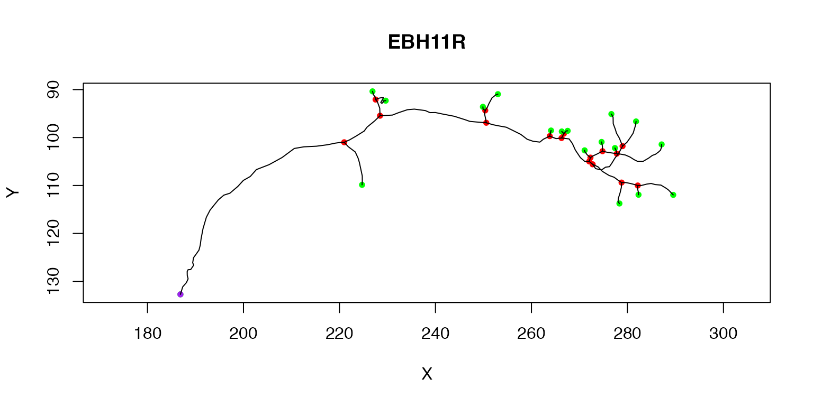
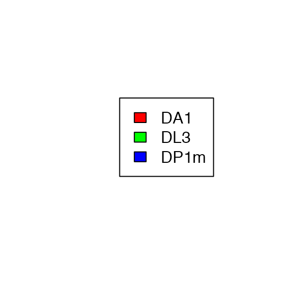

Introduction to neurons and neuronlists
Gregory Jefferis
2021-09-05
Source:vignettes/neurons-intro.Rmd
neurons-intro.RmdPreface
This vignette is designed to give you a good introduction to some of the key features of nat by teaching you about how it handles individual neurons and collections of neurons.
The source code for this vignette is available at https://github.com/natverse/nat/blob/master/vignettes/neurons-intro.Rmd. If you find something unclear or notice a typo, I would be very happy if you would click on the Pencil Icon on that page or follow this link to edit and suggest an alternative wording. Don’t be shy about doing this; I have to review any change and even if your suggestion is not perfect it will still be a prompt for me to improve this document. Thank you!
Startup
Install the package if required
install.packages('nat', dependencies = TRUE)Load the package
Neurons and Neuronlists
There are a number of basic built in types of data in R such as vectors and matrices, but it is also very easy to define new data types with specialised features to enable powerful and efficient analysis of particular kinds of data. These specialised data types are called classes and a specific instance of a class is an object (a neuroscience analogy: this is the difference between talking about the general class of mitral cells and the specific cell that you just sealed onto with your patch clamp electrode.)
We will look at two key classes that nat defines for handling 3D structures of neurons
neuronneuronlist
Sample Data
As an example we’re going to look at a data set of olfactory projection neurons originally published as Supplemental Information to accompany Jefferis, Potter et al, Cell (2007). A subset of the original data are distributed as a sample data object with the nat package, which we can load like so.
data("Cell07PNs")For more information about these data see Cell07PNs.
This Cell07PNs object has two classes neuronlist and the base class list
class(Cell07PNs)## [1] "neuronlist" "list"Many R objects inherit from the base class list (objects can have multiple classes in the same way that a mitral cell is also neuron) because this is a convenient container class into which you can put a variety of different kinds of data. In this case the Cell07PNs neuronlist contains 40 objects:
length(Cell07PNs)## [1] 40
# access the first neuron in the neuronlist
class(Cell07PNs[[1]])## [1] "neuron" "list"each representing a traced neuron. We will now look in detail at these two classes.
Neurons
We start by extracting the first neuron in Cell07PNs, and assigning it to a variable. We can then plot the neuron so that we have an image of what we are talking about.
n1=Cell07PNs[[1]]
plot(n1)Neuron internal structure
The str function (short for structure) allows us to take a look at the internal structure of this neuron object.
# Use =1 so that we don't show complete structure
# for objects inside n1
str(n1, max.level=1)## List of 24
## $ CellType : chr "DA1"
## $ NeuronName : chr "EBH11R"
## $ InputFileName: 'AsIs' chr "/GD/projects/PN2/TransformedTraces/DA1/EBH11R.tasc"
## $ CreatedAt : POSIXt[1:1], format: "2006-01-17 15:21:14"
## $ NodeName : Named chr "jefferis.joh.cam.ac.uk"
## ..- attr(*, "names")= chr "nodename"
## $ InputFileStat:'data.frame': 1 obs. of 10 variables:
## $ InputFileMD5 : Named chr "fcacee3f874cbe2c6ad96214e6fee337"
## ..- attr(*, "names")= 'AsIs' chr "/GD/projects/PN2/TransformedTraces/DA1/EBH11R.tasc"
## $ NumPoints : int 180
## $ StartPoint : num 1
## $ BranchPoints : num [1:16] 34 48 51 75 78 95 98 99 108 109 ...
## $ EndPoints : num [1:18] 1 42 59 62 80 85 96 100 102 112 ...
## $ NumSegs : int 33
## $ SegList :List of 33
## $ d :'data.frame': 180 obs. of 7 variables:
## $ OrientInfo :List of 5
## $ SegOrders : num [1:33] 1 2 2 3 4 4 3 4 5 5 ...
## $ MBPoints : int [1:2] 34 48
## $ LHBranchPoint: int 75
## $ SegTypes : num [1:33] 1 3 1 3 3 3 1 2 2 2 ...
## $ AxonSegNos :List of 3
## $ LHSegNos : num [1:26] 8 9 10 11 12 13 14 15 16 17 ...
## $ MBSegNos :List of 2
## $ NumMBBranches: num 2
## $ AxonLHEP : num 72
## - attr(*, "class")= chr [1:2] "neuron" "list"From this you can see that there are a large number of fields inside the neuron. Each field can be accessed using the $ or [[ operators
n1$NumPoints## [1] 180
n1[["NumPoints"]]## [1] 180There are a set of core fields (described in ?neuron documentation); the key ones will be described shortly. However there are also quite a few user fields in this neuron and you can safely add any field you like so long as its name does not clash with an existing field. For example:
n1$Comment='The sex of this specimen is uncertain'The single most important field in a neuron is the $d data.frame. This contains a block of data closely reminiscent of the SWC data format for traced neurons:
str(n1$d)## 'data.frame': 180 obs. of 7 variables:
## $ PointNo: int 1 2 3 4 5 6 7 8 9 10 ...
## $ Label : num 2 2 2 2 2 2 2 2 2 2 ...
## $ X : num 187 187 188 188 188 ...
## $ Y : num 133 131 130 129 129 ...
## $ Z : num 88.2 90.6 93.1 95 97.5 ...
## $ W : num 1.01 1.27 1.14 1.27 1.27 1.27 1.27 1.27 1.27 1.27 ...
## $ Parent : num -1 1 2 3 4 5 6 7 8 9 ...Each row defines a node in a branched tree with a unique integer identifier, PointNo, normally but not always sequentially numbered from 1. The X,Y,Z columns encode the position of each vertex and the W column encodes the diameter of the neurite at that position.
Methods for neurons
R’s simple S3 object oriented system allows specialised functions for particular classes to be defined. These functions tailored to a particular class are called methods. Methods can be provided for pre-existing functions supplied with base R as well as new user-written functions. The system is quite simple. If a function foo is defined as a generic function then you can define new functions called foo.bar that will be called when you write foo(x) and x has class `bar.
We already used one such method without comment, plot.neuron. There is a base R function called plot. nat defines a new function called plot.neuron, which R interprets as a plot method specialised for neuron objects. When the base R plot function is called, it looks at the class of its first object to see whether a specialised method exists. If there is none, it will use a fallback method called plot.default.
The plot.neuron method interprets the branching structure of a neuron and draws line segments joining up the connected nodes at the appropriate 2D positions. You can compare it with what you would get if you just plotted the XY position of all nodes joined together by a single line:
plot(n1$d$X, n1$d$Y, type = 'l')
You can find out what methods are available for a particular class like so:
methods(class = 'neuron')## [1] all.equal as.neuron as.ngraph as.seglist
## [5] branchpoints dotprops endpoints intersect_plane
## [9] ndigest nvertices Ops plot
## [13] plot3d potential_synapses print prune_in_volume
## [17] prune_online prune_twigs prune reroot
## [21] resample rootpoints scale sholl_analysis
## [25] subset summary write.vtk xform
## [29] xyzmatrix xyzmatrix<-
## see '?methods' for accessing help and source codeYou can then find the help page for any method in the console with ?plot.neuron. Note that if you write ?plot you will get the documentation for the basic plot function supplied with R.
It is also good idea to look at nat’s function reference page which groups available functions into categories that often reflect the class of object they can work on.
In R, operators such as * or + are actually special functions with two arguments, so one can add methods for these in the same way. In the following example we use this arithmetic to shift a neuron by a small amount:
plot(n1, col = 'black', WithNodes = F, main="Shifting neurons")
# shift by 3 microns in x,y,z
plot(n1+3, col = 'red', add = TRUE, WithNodes = F)
# shift by -5 microns in y
plot(n1+c(0,-5,0), col = 'blue', add = TRUE, WithNodes = F)
Another specialised method is subset.neuron which we can use to extract part of a neuron into a new object. For example, a simple spatial criterion, X location must be >240, is used to extract the axon terminal arborisation field in this example
plot(n1, col = 'black', WithAllPoints = T, main="Subsetting a neuron")
# keep only nodes with X position >20
n1.lh=subset(n1, X>240)
# plot the selected part of the neuron in blue
plot(n1.lh, col='blue', lwd=3, add=TRUE)
# add a line illustrating the cut point
abline(v=240, lty=2)We can also summarise the morphological properties of a neuron using the summary.neuron method, which allows us to compare measurements for the original neuron and the axon arbour that we just cut out above.
summary(n1)## root nodes segments branchpoints endpoints cable.length nTrees
## 1 1 180 33 16 18 297.1763 1
summary(n1.lh)## root nodes segments branchpoints endpoints cable.length nTrees
## 1 1 111 27 13 15 156.7654 1See nat’s function reference page for additional functions for working with neurons.
Neuronlists
The data statement above loaded a neuronlist object called Cell07PNs containing 40 neuron objects. neuronlist objects are key data structures in nat for convenient handling of collections of neurons.

Structure of neuronlist objects
The diagram above presents the structure of a neuronlist, x, which contains 5 neurons. The main structure is an R list object, which in this case contains 5 slots. Each slot contains a neuron with a unique name. In addition to this list of neurons there is an optional attached data.frame (another standard R class). When present, each neuron in the main list must have a matching row in this data.frame.
Neuronlists can be manipulated use the square bracket subscript operator to extract or replace a subset of their elements. Crucially when this happens the corresponding rows of the attached metadata are also selected as diagrammed for the result of x[1:3] (right hand side of figure above).
When subscripting any list in R, it is very important to understand the difference between using the single and double bracket operator. We can illustrate this difference as follows:

The difference between single and double bracket subscript operators
The single bracket operator makes a new list containing a specified subset of elements in the original list, while the double bracket operator extracts the object at the given position. So in the figure x[1] is a neuronlist object of length 1, whereas x[[1]] is the neuron object at the first position in the list.
Worked Examples
Let us start by extracting the first five neurons from our sample data.
# we can select neurons by indexing
first5=Cell07PNs[1:5]
summary(first5)## root nodes segments branchpoints endpoints cable.length nTrees
## EBH11R 1 180 33 16 18 297.1763 1
## EBH20L 1 200 26 12 15 327.0929 1
## EBH20R 1 199 25 12 14 347.6153 1
## EBI12L 1 169 23 11 13 294.4680 1
## EBI22R 1 160 27 13 15 303.0150 1Each neuron in the neuronlist has an associated name which can be used to select it. We can get the names of all neurons using the names function.
names(Cell07PNs)## [1] "EBH11R" "EBH20L" "EBH20R" "EBI12L" "EBI22R" "EBJ23L" "EBJ3R" "EBN19L"
## [9] "EBO15L" "EBO53L" "ECA34L" "ECB3L" "LI23L" "LIC2R" "LJ5L" "MC3B"
## [17] "MH16L" "MM14L" "NA7L" "NH15L" "NH29B" "NI16L" "NIA8L" "NIA8R"
## [25] "NNA9L" "NNC4R" "NNE1L" "OFD2L" "OKC9R" "SDD8L" "SH21L" "SL20L"
## [33] "TKC8R" "TL4R" "TS7L" "TT27R" "VA15R" "VA20R" "VB37L" "VB58L"## [1] TRUEYou can also use the $ operator to access a single neuron e.g. Cell07PNs$EBH11R. This can be quite useful when working interactively in the console because RStudio will offer to autocomplete the neuron name when you start typing past the $ symbol, but is not recommended for scripts.
Metadata
The names of neurons are also used to index a data.frame object attached to the neuronlist with one row for each neuron. You can use the head function to give a summary of the attached metadata in this neuronlist. Using the as.data.frame method on a neuronlist allows you to extract this attached metadata to a separate object.
head(Cell07PNs)## Brain RegistrationScore Notes Glomerulus Batch Directory Traced
## EBH11R EBH11R 4 DA1 PN2 unsure yes
## EBH20L EBH20L 4 DL3 PN2 unsure2 yes
## EBH20R EBH20R 4 DA1 PN2 unsure2 yes
## EBI12L EBI12L 4 DA1 PN2 unsure3 yes
## EBI22R EBI22R 4 DL3 PN2 unsure3 yes
## EBJ23L EBJ23L 4 DL3 PN2 unsure4 yes
## Scored.By Sex Include ID HaveWarp HaveAsc
## EBH11R ACH M EBH11R TRUE TRUE
## EBH20L ACH EBH20L TRUE TRUE
## EBH20R ACH M EBH20R TRUE TRUE
## EBI12L ACH F EBI12L TRUE TRUE
## EBI22R ACH EBI22R TRUE TRUE
## EBJ23L ACH EBJ23L TRUE TRUE
## TraceFile AscBatch Status
## EBH11R /GD/projects/PN2/TransformedTraces/DA1/EBH11R.tasc New
## EBH20L /GD/projects/PN2/TransformedTraces/DL3/EBH20L.tasc New
## EBH20R /GD/projects/PN2/TransformedTraces/DA1/EBH20R.tasc New
## EBI12L /GD/projects/PN2/TransformedTraces/DA1/EBI12L.tasc New
## EBI22R /GD/projects/PN2/TransformedTraces/DL3/EBI22R.tasc New
## EBJ23L /GD/projects/PN2/TransformedTraces/DL3/EBJ23L.tasc New
## GlomSeq NumNAs MBP1 MBP2 LHBP PNType Seq nTrees StartPoint
## EBH11R 1 0 34 48 75 iPN 13 1 1
## EBH20L 1 0 29 29 77 iPN 15 1 1
## EBH20R 2 0 24 80 147 iPN 16 1 1
## EBI12L 3 0 29 59 89 iPN 18 1 1
## EBI22R 2 0 34 34 56 iPN 20 1 1
## EBJ23L 3 0 23 23 52 iPN 21 1 1
## CreatedAt
## EBH11R 2006-01-17 15:21:14
## EBH20L 2006-01-17 15:21:14
## EBH20R 2006-01-17 15:21:14
## EBI12L 2006-01-17 15:21:15
## EBI22R 2006-01-17 15:21:15
## EBJ23L 2006-01-17 15:21:15
## WarpFile
## EBH11R /GD/projects/PN2/allreg/warp/unsure/average-goodbrains_EBH11R101_warp_m0g40c4e1e-1x16r3.list
## EBH20L /GD/projects/PN2/allreg/warp/unsure2/average-goodbrains_EBH20L101_warp_m0g40c4e1e-1x16r3.list
## EBH20R /GD/projects/PN2/allreg/warp/unsure2/average-goodbrains_EBH20R101_warp_m0g40c4e1e-1x16r3.list
## EBI12L /GD/projects/PN2/allreg/warp/unsure3/average-goodbrains_EBI12L101_warp_m0g40c4e1e-1x16r3.list
## EBI22R /GD/projects/PN2/allreg/warp/unsure3/average-goodbrains_EBI22R101_warp_m0g40c4e1e-1x16r3.list
## EBJ23L /GD/projects/PN2/allreg/warp/unsure4/average-goodbrains_EBJ23L101_warp_m0g40c4e1e-1x16r3.list
df=as.data.frame(Cell07PNs)
nrow(df)## [1] 40
# rownames of data.frame are the same as names of Cell07PNs list.
all.equal(rownames(df), names(Cell07PNs))## [1] TRUEYou can use columns in the attached metadata in expressions that select or operate on the neurons in the list. In the next two examples we
-
subsetthe neurons in a neuronlist based on a metadata column - use the
withfunction to carry out a calculation using column(s) of metadata.
# subset.neuronlist method (which you call using the subset function)
da1n=subset(Cell07PNs, Glomerulus=="DA1")
# with.neuronlist method
with(Cell07PNs, table(Glomerulus))## Glomerulus
## DA1 DL3 DP1m VA1d
## 11 10 8 11There is a second approach to accessing this attached metadata data.frame, using the square bracket operator with two arguments as used for subscripting (2D) matrices or data.frames. For example we can access the Glomerulus column like so:
Cell07PNs[, 'Glomerulus']## [1] DA1 DL3 DA1 DA1 DL3 DL3 VA1d VA1d VA1d VA1d DP1m DP1m DA1 DL3 VA1d
## [16] VA1d DL3 DA1 DA1 VA1d VA1d VA1d DL3 VA1d DP1m DP1m DP1m DP1m DP1m DP1m
## [31] DA1 DL3 DL3 DL3 VA1d DA1 DA1 DA1 DL3 DA1
## Levels: DA1 DL3 DP1m VA1dThis approach has some features that make for additional flexibility. For example you can acess the whole data.frame like so:
summary(Cell07PNs[,])The form [,] which includes a comma implies two (missing) arguments. nat therefore interprets this as request for the 2D data.frame attached to Cell07PNs rather than the neuronlist itself. You can also use this notation to add new columns or modify existing columns in place.
Cell07PNs[, 'NewColumn'] = somevariable
Cell07PNs[, "Sex"] = sub("F", "female", Cell07PNs[, "Sex"])
Cell07PNs[, "Sex"] = sub("M", "male", Cell07PNs[, "Sex"])You can also access selected rows of the data.frame in the normal way:
Cell07PNs[1:5, "Glomerulus"]
Cell07PNs[Cell07PNs[, "Sex"]=="F", "Glomerulus"]Working on all the neurons in a neuronlist
There are quite a few methods defined for the neuronlist class:
methods(class = "neuronlist")## [1] - [ [<- *
## [5] / + as.data.frame as.neuronlistfh
## [9] c data.frame<- dimnames dotprops
## [13] droplevels head intersect mirror
## [17] nvertices plot plot3d potential_synapses
## [21] print prune_in_volume prune_online prune_twigs
## [25] prune reroot resample setdiff
## [29] sholl_analysis subset summary tail
## [33] union with xform xyzmatrix
## [37] xyzmatrix<-
## see '?methods' for accessing help and source codeFor example we can scale the position (and diameter) of all of the neurons in a neuronlist using the * operator:
# convert from microns to nm
Cell07PNs.nm = Cell07PNs*1e3
plot(Cell07PNs.nm)
There is also a more powerful xform function that allows arbitrary transformations to be applied. For example here we apply a 3D rotation expressed as a homogeneous affine matrix:
# define a 180 degree rotation around the x axis
rotm=cmtkparams2affmat(rx=180)
# remove tiny values due to rounding errors
rotm=zapsmall(rotm)
plot(xform(Cell07PNs, rotm))
More generally any function that works on a neuron can be applied to a neuronlist by using the function nlapply. This is an analogue to base R’s lapply function. This will take care of returning a new neuronlist with the attached metadata and includes additional features such as error tolerance, progress bars and parallelisation for multi-core machines. It is worth reviewing the help and examples for this function carefully if you start to work regularly with neuronlists.
Plots
We have already seen that we can plot a single neuron (the first) like so:
plot(Cell07PNs[[1]])
The purple node higlights the root or soma of the neuron, red nodes are branch points, green nodes are end points. We can also label each node with its PointNo index.
plot(Cell07PNs[[1]], col='red', WithText=T)
Multiple neurons can be plotted by passing a whole neuronlist or indexing it
plot(Cell07PNs[1:3])
More complex subsets are possible by using plot.neuronlist subset argument (which works in the same way as the subset.neuronlist function). For example here we select neurons by which olfactory glomeruli their dendrites occupy:
plot(Cell07PNs, subset=Glomerulus!="DA1", col='grey', WithNodes=F, main="DA1 neurons")
plot(Cell07PNs, subset=Glomerulus=="DA1", add=TRUE)
3D plots
So far we have only used 2D plots in this document, but especially for interactive analysis and exploration, it is much more helpful to have 3D plots that can be rotated, zoomed etc. nat provides numerous functions for 3D plots based on the rgl package. It is actually possible to embed fully interactive 3d figures in rmarkdown reports like this one by setting the webgl chunk option.
clear3d()
plot3d(Cell07PNs[[1]], col='red')
# set a grey background so it's easier to see extent of the webgl canvas
bg3d(col='lightgrey')You should be able to rotate (click and drag) and zoom (mouse wheel) this figure.
Since this results in quite large html files when used with many neurons, we will not use it further here. For now let’s show a plot in which we both select a subset of neurons and colour them according to their glomerulus of origin.
# 3d plot of neurons from olfactory glomeruli beginning with a D
# coloured by glomerulus
rval=plot3d(Cell07PNs, subset=grepl("^D", Glomerulus), col=Glomerulus,
lwd=2, WithNodes=FALSE)
# make a legend so that you know which colours match which glomerulus
plot.new()
with(attr(rval,'df'), legend('center', legend = unique(Glomerulus), fill=unique(col)))
Putting it all together
To close this tutorial, let’s do some morphological analysis of the neurons in this dataset. There are second order olfactory projection neurons originating from 4 different glomeruli in the Cell07PNs sample dataset, each coming from a different animal. We can ask whether their axon terminal arborisations in a brain area called the lateral horn show any features that are distinctive for different classes. This would be consistent with the hypothesis that information from different glomeruli (i.e. olfactory channels) is handled in a stereotyped way in this brain area.
Let’s start by cutting out the arbour within the lateral horn from all of the neurons. We’ll use a very simple approach of cutting at X=250, although nat has more sophisticated ways to do this e.g. by using 3D spaces defined by a surface mesh.
# note that we had to use OmitFailures=T due to a problem with the graph
# structure of one neuron
lha=nlapply(Cell07PNs, subset, X>250, OmitFailures = T)
# Let's plot what we have colouring by glomerulus
plot(lha, col=Glomerulus, WithNodes=F)Now we can get a basic statistical summary by axon arbour.
lhstats=summary(lha, include.attached.dataframe = TRUE)
boxplot(lhstats$cable.length~lhstats$Glomerulus, log='y')
boxplot(lhstats$branchpoints~lhstats$Glomerulus)
We can also calculate the median position of the arbour for each neuron and add that to the lhstats database
# quick function to calculate centroid
arbour_centroid <- function(n) {
# extract location of all points in neuron object
xyzs=xyzmatrix(n)
# median in all 3 axes (=>2 columns)
apply(xyzs, 2, median)
}
# note that we have to transpose because sapply results in x,y,z rows
centroids=t(sapply(lha, arbour_centroid))
lhstats=cbind(lhstats, centroids)Finally we can take these data and see how well we can predict the identity of the neuron (i.e. its glomerulus) based on the statistics of the axon arbour in the lateral horn. We use the linear discriminant analysis (provided by the function lda in recommended package MASS). This also runs a leave one out cross-validation to get a more robust initial estimate of prediction error.
library(MASS)
lda.fit = lda(Glomerulus ~ cable.length+X+Y+Z+branchpoints, lhstats, CV = T)
table(lda.fit$class, lhstats$Glomerulus)##
## DA1 DL3 DP1m VA1d
## DA1 10 2 0 1
## DL3 0 7 0 0
## DP1m 0 0 8 0
## VA1d 1 0 0 10The prediction accuracy of 35/39 i.e. just under 90% is already very good compared with a chance level of about 25% for these 4 classes.
Learning More
We hope this tutorial will provide you with a good foundation for further use of the nat and related packages. Please visit the main nat README for suggestions of resources to learn more and solve problems. You may also find that some time spent reading Hadley Wickham’s Advanced R is a worthwhile investment. I recommend the first 7 chapters (Introduction to OO field guide) as material that will be helpful for anyone who intends to carry out a significant project using R.